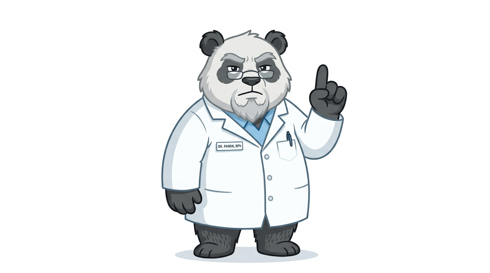

はじめに
よくある現場の悩みから

ルーキーさん:
患者さんに「ジェネリックに変えましょうか」って案内しようとしたら、
「あれ、私の薬ってバイオシミラーとかいうやつでしょ？同じじゃないの？」って聞かれて…
うまく説明できなくて困りました。

センパイさん:
これは混同しやすいですよね。結論から言うと、
「似たような存在だけど、別カテゴリの薬」なんです。
まず2つの言葉の意味を整理しましょう。
用語を知ろう
この図解に出てくる言葉
「ブランド品」のような存在です。
化学的に「まったく同一」の成分を使います。 一般的に価格が安くなります。
先行品と「ほぼ同等」であることが国の審査で確認されています。 「完全に同一」ではなく「臨床的に意味のある差がない」という考え方です。
ヒュミラ・レミケード・エンブレルなど抗体製剤・インスリン製剤などが代表例です。
患者さんに必ず伝えること
この3点を押さえれば安心してもらえます
「似たような後発品」ですが、分類が違う薬です。混同しないよう最初に伝えましょう。
「安いから大丈夫？」という不安には、「安全性・有効性を国が審査して承認されています」と伝えましょう。
ジェネリックと違い、バイオシミラーは医師の処方に従って選ぶ薬です。「薬局が勝手に変えた」という誤解を防ぎましょう。
ジェネリックとバイオシミラーを比べる
一目でわかる違い
| 比較ポイント | ジェネリック （後発医薬品） |
バイオシミラー （バイオ後続品） |
|---|---|---|
| 薬の種類 | 化学的に合成できる薬 （錠剤・カプセルが多い） |
タンパク質でできた注射薬 （注射・点滴が多い） |
| 作り方 | 化学合成 | 生きた細胞で製造 （細胞培養・精製） |
| 先発品との一致度 | 同一 |
ほぼ同等
（臨床的に意味のある差なし） |
| 承認に必要な試験 | 生物学的同等性試験 | 複数の比較試験 （品質・安全性・有効性・抗体反応） |
| 代替調剤 | 条件を満たせば可能 |
原則として薬局が 勝手に変えない |
| 患者さんへのたとえ | 同じ楽譜を別のCDに焼いた | 同じ曲を別のオーケストラが演奏した |
たとえ話で理解する
患者さんへの説明で使えます
ジェネリックは「同じ楽譜（化学構造）を、別のスタジオで同じように録音したCD」。
どのCDを聴いても、曲（有効成分）はまったく同じです。
バイオシミラーは「同じ曲を別のオーケストラが演奏した録音」。
同じ楽譜を使っていても、演奏者（細胞）が違うと微妙な表情が変わります。でも審査で「聴き手（患者さん）にとって大切な違いはない」と確認されています。
ジェネリックの製造は「レシピ通りに材料を化学的に組み合わせるだけ」。何度作っても同じものが完成します。
バイオシミラーの製造は「生きた酵母でお酒を醸造する」のに似ています。同じ酵母・同じ条件でも、バッチごとにわずかな違いが出ます。だから管理が複雑で、コストも高め。
ジェネリックへの変更は「同じ棚の別メーカー商品に変える」ようなイメージ。処方の仕組み上、条件を満たせば変更できます。
バイオシミラーは「別の棚の商品」。日本では先行バイオ医薬品とバイオシミラーには別々の一般名がつくため、薬剤師が勝手に入れ替えることは原則ありません。医師の処方に従います。
ジェネリック医薬品とは
低分子の後発医薬品
ルーキーさん:
ジェネリックって「同じ有効成分だから大丈夫」と説明してますが、
患者さんに「本当に効くの？」と聞かれると毎回ドキドキします。
センパイさん:
「同じ有効成分で、体内での効き方が同等と確認された薬です」が正確な説明です。
「生物学的同等性試験」という血中濃度の試験をクリアしたものだけが承認されます。
- 有効成分は先発品と同一（化学構造が完全に一致）
- 生物学的同等性試験で血中濃度が同等と証明されている
- 添加物は異なる場合がある（アレルギー歴がある場合は確認を）
- 条件を満たせば変更調剤が可能（処方の書き方・施設のルールによる）
バイオシミラーとは
生物由来の高分子製剤の後続品
ルーキーさん:
「ほぼ同等」ってあいまいな感じがして…患者さんに大丈夫って言えるか心配です。

センパイさん:
「ほぼ同等」というのは「あいまいに認めた」ではなく、
「科学的に丁寧に検証した結果、患者さんに影響のある差はない」と確認した、という意味です。
ジェネリックが「完全コピー」できるのは、分子が小さくてシンプルだからこそ。
バイオ製剤はあまりにも大きく複雑で、完全コピー自体が不可能なんです。
- 生きた細胞を使って製造（製品によって使う細胞の種類は異なります）
- 品質・非臨床・臨床の比較試験で先行品との同等性を証明
- 免疫原性（抗体ができやすさ）も評価されている
- 承認後も製造販売後調査が続く製品もある
代替調剤のルール（日本）
ジェネリックとバイオシミラーでは違う
「バイオシミラーに変わりましたが、これは医師が処方を変えたためです。薬局が勝手に変えたわけではありません」と伝えると安心してもらえます。 また、切り替え後に気になる症状が出たら必ず報告してもらうよう伝えましょう。
免疫原性とは
バイオ製剤特有の注意点
多くの方には問題ありませんが、まれに薬の効きに影響したりアレルギー様の反応が出ることがあるため、先行品もバイオシミラーも承認の際・使用後ともに確認が行われています。
患者さんへの平易な説明例：
「この薬はタンパク質でできているので、まれに体が"知らないタンパク質が来た"と反応することがあります。
そうなると薬が効きにくくなることがあるため、承認の際も、使い始めた後も、そういった反応がないかを確認しています。」
- 注射部位の腫れ・痛みがひどくなる・長引く
- 急なじんましん・発疹・息苦しさ（アナフィラキシー様症状）
- これまでより薬の効きが悪くなったと感じる
※ 心配なことはいつでも薬局・処方医にご相談ください
まとめ
これで患者さんに説明できます
センパイさん:
整理すると、患者さんへのポイントは3つです。
①ジェネリックとバイオシミラーは別物、②どちらも国が承認した安全な薬、
③バイオシミラーは薬局が勝手に変えない。この3点を押さえれば大丈夫です。

ルーキーさん:
「楽譜のCD」と「オーケストラの演奏」のたとえ、これなら患者さんにも伝わりそうです！
自信を持って説明できます。ありがとうございました！
薬剤師チェックリスト
- ジェネリックとバイオシミラーは「似ているが別カテゴリ」と伝えた
- どちらも国の審査で安全性・有効性が確認されていると伝えた
- バイオシミラーは医師の処方に従う旨を伝えた
- 切り替え後に気になる症状があればすぐ連絡するよう伝えた
患者さんへ：これだけ覚えれば大丈夫
- お薬手帳に薬の名前を記録しておきましょう
- 薬の名前が変わったときは、薬剤師に理由を確認してください
- 気になる症状（かゆみ・発疹・効きが悪い気がする等）はすぐ薬局か病院に連絡を
- 「安いから不安」という心配は薬剤師に何でも聞いてください